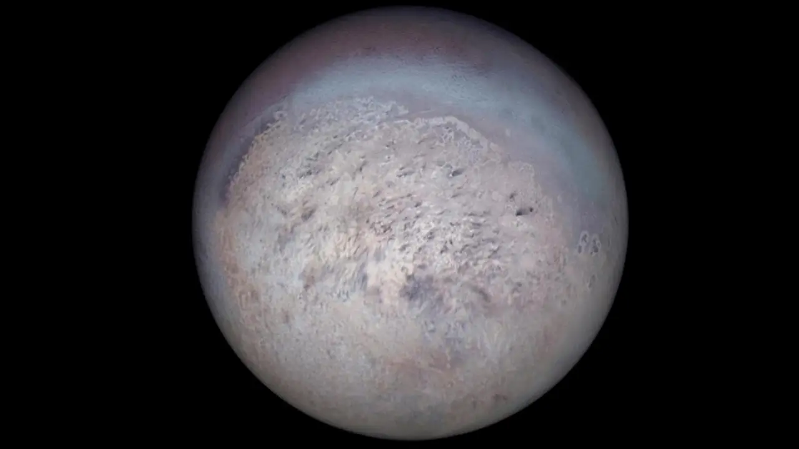

Bulan Es Ber-Geyser Neptunus
Triton adalah bulan terbesar dari planet Neptunus dan merupakan satu-satunya bulan besar di Tata Surya yang mengorbit dengan arah berlawanan dari rotasi planet induknya (orbit retrograde). Karakteristik ini mengindikasikan bahwa Triton dulunya adalah objek Sabuk Kuiper (seperti Pluto) yang tertangkap oleh gravitasi Neptunus. Triton merupakan salah satu objek terdingin di Tata Surya dengan permukaan tertutup es nitrogen, karbon monoksida, dan metana. Uniknya, Triton memiliki geyser aktif yang menyemburkan gas nitrogen dan debu gelap sejauh 8 km ke atmosfer tipisnya.